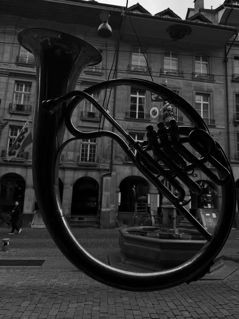

Sounds / Juice+
LISTEN
WITHOUT
BORDERS
A weekly 45–60 minute transmission connecting club music, jazz, electronics, voices and unexpected references.

01 / Current transmission
Juice+
selects.
Listen inside Domus Cultura or continue into the full SoundCloud archive. New selections arrive weekly.
Official Juice+ channel
02 / Programme
Sound as a
cultural space.
Selections, listening sessions and artist conversations in motion.